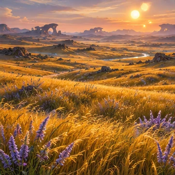

Příslušnost
Dravari
Otevřené travnaté pláně a obzor bez konce.
Prozkoumat biom →Kmen Ayru · Dravari
Kmen Wertuû patří do biomu Dravari (planiny).
✦ Kmen / potvrzené zařazení
Příslušnost
Otevřené travnaté pláně a obzor bez konce.
Prozkoumat biom →Vzhled Ayru
Detailní adaptace místních Ayru jsou zatím rozpracované.
Toto jsou rysy obyvatel biomu, nikoli unikátní rysy jednoho kmene.
Kultura a symboly
Posvátná rostlina, zvíře, totem, barvy, vůdce a obřady tohoto kmene zatím nejsou na webu doloženy jako schválené.
Sousední kmeny stejného biomu